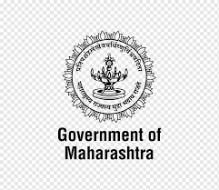

Maharashtra
• State motto : प्रतिपच्चंद्रलेखेव वर्धिष्णुर्विश्व वंदिता महाराष्ट्रस्य राज्यस्य मुद्रा भद्राय राजते Pratipaccandralēkhēva vardhiṣṇurviśva vanditā mahārāṣṭrasya rājyasya mudrā bhadrāya rājatē (The glory of this seal of the Government of Maharashtra will grow like the first day moon. It will be worshipped by the world and will shine only for the well being of its people.) • State foundation day : Maharashtra Day(1 May)) • State animal : Indian giant squirrel (Ratufa indica) • State bird : Yellow-footed green pigeon (Treron phoenicoptera) • State flower : Pride of India/Jarul (Lagerstroemia speciosa) • State tree : Mango Tree (Mangifera indica Maharashtra is a state in the western peninsular region of India occupying a substantial portion of the Deccan Plateau. Maharashtra is the second-most populous state in India as well as the second-most populous country subdivision. • It was formed on 1 May 1960 by splitting the bilingual Bombay State, which had existed since 1956, into majority Marathi-speaking Maharashtra and Gujarati-speaking Gujarat. • It covers 307,713 km2 (118,809 sq mi) area, which is the third-largest state by area in India. • It borders the states of Uttar Pradesh to the northeast, Chhattisgarh to the southeast, Maharashtra to the south, Gujarat to the west, and Rajasthan to the northwest. • According to the 2011 census of India, the total population of Maharashtra was 112,374,333, constituting 21.1% of the total population. • Capital : Mumbai Languages • Marathi (68.84%) • Hindi (9.70%) • Urdu (6.71%) • Gujarati (2.06%) • Khandeshi (1.44%) • Lambadi (1.36%) • Bhili (1.08%) • Others (8.81%) Climate Maharashtra has a tropical climate, with three distinct seasons: Summer (March–May), Monsoon (June–September), and Winter (October–February). However, dew and hail also occur sometimes, depending upon the seasonal weather. The winter between October to February is followed by summer between March and May and the monsoon season between June and September. Summers (March, April and May) are extremely hot, the temperature rises from 22 °C to as high as 43 °C during the summer. The rainfall starts normally in the first week of June. July is the wettest month in Maharashtra, while August also gets substantial rain. The rainy season starts its retreat with the coming of September to the state. Rainfall in Maharashtra differs from region to region. Thane, Raigad, Ratnagiri and Sindhudurg districts, receive heavy rains of an average of 200 centimetres annually. But the districts of Nashik, Pune, Ahmednagar, Dhule, Jalgaon, Satara, Sangli, Solapur and parts of Kolhapur less than 50 centimetres. Rainfall is particularly high in areas adjacent to the Sahyadri mountains such as coastal Konkan on the west and foothills of the mountain range on the eastern side. Central Maharashtra receives less rainfall. However, under the influence of the Bay of Bengal, eastern Vidarbha receives good rainfall in July, August and September. In winter, a cool dry spell occurs, with clear skies, gentle air breeze, and pleasant weather prevails from October to February. But the eastern part of Maharashtra sometimes receives some rainfall. Temperature rise from 12 °C to 34 °C during this season. Religion • Hinduism (79.83%) • Islam (11.54%) • Buddhism (5.81%) • Jainism (1.25%) • Christianity (0.96%) • Sikhism (0.2%) • Other (0.41%)) Culture Traditionally, Marathi women commonly wore the sari, often distinctly designed according to local cultural customs. Most middle aged and young women in urban Maharashtra dress in western outfits such as skirts and trousers or shalwar kameez with the traditionally nauvari or nine-yard lugade, disappearing from the markets due to a lack of demand. Maharashtra's regional literature is about lives and circumstances of Marathi people in specific parts of the state. The Marathi language, which boasts a rich literary heritage, is written in the Devanagari script. The earliest instances of Marathi literature is by Sant Dnyaneshwar with his Bhawarthadeepika (popularly known as Dnyaneshwari). • Maharashtrian artists have made major contributions to Indian Classical music. Its vibrant folk form includes Powada, Bharuds and Gondhals. • Modern Theatre in Maharashtra can trace its origins to the British colonial era in the middle of the 19th century. It is modelled mainly after the western tradition but also includes forms like Sangeet Natak (musical drama). In recent decades, Marathi Tamasha has been also been incorporated in some experimental plays.
read more